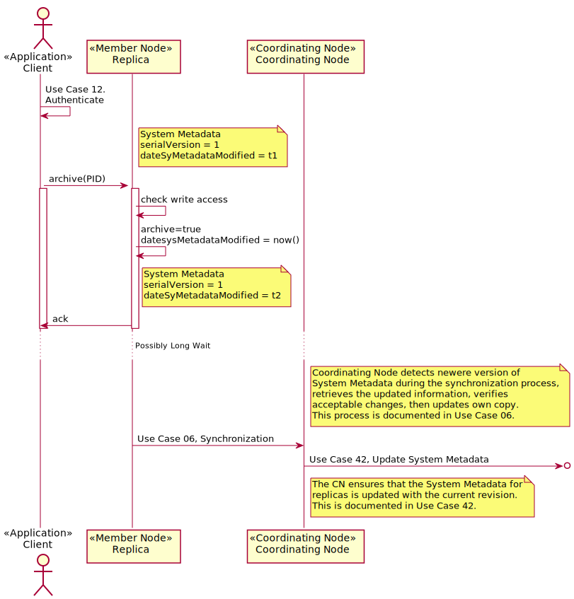

Use Case 41 - Archive an Object¶
Goal¶
Archive an object so that it is no longer discoverable, but remains accessible by those that already have a reference to it.
Summary¶
A content owner or manager would like to prevent further discovery of an object though ensure that references to the object (using its identifier) remain valid.
Transition to an archived state is not reversible.
Functionally, archiving an object sets the Types.SystemMetadata.archived
property of the associated System Metadata to True. The operation is performed
by calling MNStorage.archive() or CNCore.archive(). Since this
operation is an update to System Metadata, Use Case 42 - Update System Metadata Properties is invoked and the
change is propogated through the system.
Actors¶
Client, a content manager or owner (must have write permission)
Coordinating Node
Member Node
Figure 1. Use case 41 diagram showing actors and components involved in this action.
Preconditions¶
Client has authenticated to the desired level
Client has write permission on the object
Object has been synchronized by the Coordinating Nodes
The object may be replicated to other Member Nodes
Triggers¶
A user with write permission calls
CNCore.archive()
Post Conditions¶
The archive property of
Types.SystemMetadatais set to “true”System metadata for all replicas of the object is updated
Search indices are updated to remove the object
Process¶
Figure 2. Sequence diagram for Use Case 41 illustrating the high level sequence of operations associated with archiving an object.
Example¶
Using curl to archive an object. ANODE can be any Member or Coordinating
Node that has a copy of the object:
# The member node base URL
NODE="https://my.mn.org/base/url"
# A client certificate with a subject that has write permission on the object
CERT="my_client_certificate.pem"
# The identifier of the object to be archived.
PID="object.identifier"
# The provided identifier must be properly URL path encoded
EPID=URL_Encode(PID)
# Invoke the archive operation on the identifier
curl -E ${CERT} -X PUT "$NODE/V1/archive/${EPID}"

Table of Contents
Related Topics
- Documentation Overview
- Use Cases
- Previous: Use Case 38 - Reserve an Identifier
- Next: Use Case 06 - MN Synchronize
- Use Cases